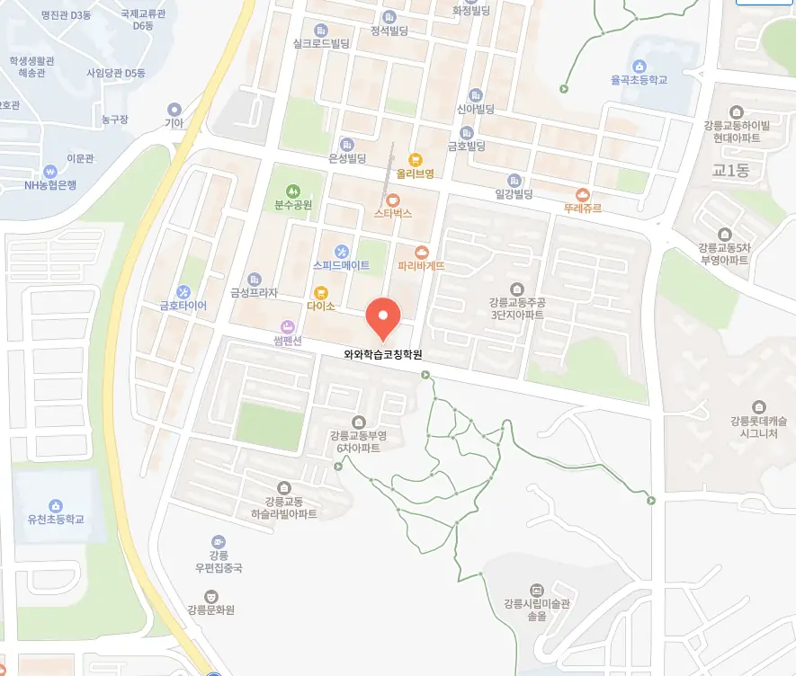

첫 번째로 교동 수능학원의 위치가 집이나 학교와 가까운지 확인해요. 두 번째로 교사들의 경력과 전문성을 살펴보는 것이 중요한데, 실제 수업 영상을 통해 강사의 전달력을 직접 체험해 보는 것이 도움이 돼요. 세 번째로는 수업 규모를 고려해야 하는데, 작은 반에서는 개별 지도와 질문 기회가 많아져요. 네 번째로는 교육 과정이 학교 교과와 얼마나 연계되는지 점검해요. 다섯 번째로는 학부모 상담 시 제공되는 학습 진단 자료와 피드백 주기가 투명한지 확인해요. 여섯 번째로는 체험 수업이나 무료 평가를 통해 실제 분위기를 느껴보는 것이 좋으며, 마지막으로는 주변 학부모들의 입소문과 후기들을 종합적으로 검토해요. 이런 요소들을 차근차근 체크하면 학생 스스로도 자신감 있게 선택할 수 있답니다.
교동의 학부모들은 자녀가 성장 단계마다 필요한 교육 방식을 고민해요. 초등 저학년은 집중력이 짧아 짧은 시간 안에 핵심 개념을 전달하는 수업이 효과적이에요. 초등 고학년은 과목 간 연계가 늘어나기 때문에 통합 학습을 강조하는 프로그램이 필요해요. 중학생은 심화 문제 풀이와 자기 주도 학습 습관을 길러주는 코칭이 중요해요. 고등학생은 대학 진학 목표에 맞춘 맞춤형 강의와 피드백이 핵심이에요. 전체 학년에서는 개별 지도와 정기적인 학습 점검이 전체적인 성장에 도움이 돼요.
와와학습코칭센터는 개인 목표 리마인드를 중심으로 수업을 설계해요. 학생마다 설정한 목표를 매주 점검하고 피드백을 제공해 목표 달성을 돕는 체계라고 생각해요. 특히 초등수학 과정에서는 180,000원이라는 합리적인 비용으로 기본 과정을 제공하고, 심화 과정은 230,000원으로 맞춤형 학습을 지원해요. 상담실에서는 부모와 학생이 함께 목표를 설정하고 현재 위치를 진단하는 솔직한 대화를 진행해요. 수업은 교사가 일방적으로 설명하기보다 학생이 스스로 문제를 탐색하고 답을 찾아가는 코칭 방식으로 실현해요. 이러한 접근 덕분에 학생들이 학습 동기를 스스로 유지하고, 장기적인 성취감을 느낄 수 있다고 믿어요. 마지막으로, 지속적인 목표 재설정과 성과 검증 과정을 통해 학생 스스로 성장 궤도를 관리할 수 있다고 생각해요
| 학원명 | 와와학습코칭학원 |
| 수강료 | 초등수학 180,000원 | 초등수학 230,000원 |
CURRICULUM
이곳은 정리노트를 제출하면 선생님이 피드백을 제공하는 시스템을 갖추고 있어요. 교육 철학에서 드러난 책임감이 아이들의 학습을 이끄는 원동력이 되거든요. 강사 간 수업 방향 일관성을 유지하기 위해 통합 관리 체계를 구축하고, 단원 통합 문제와 누적 복습 시스템을 설계해서 방향 전환으로 가능성을 확인해요. 지역 중등 전과목교동 수능학원 정보를 바탕으로 맞춤형 커리큘럼을 운영해요. 이렇게 체계적으로 관리하다 보니 아이들이 학습 흐름을 놓치지 않고 꾸준히 성장하더라고요.
학생들이 교동 수능학원 선택 단계에서 흔히 저지르는 실수는 비용 대비 효과를 충분히 검토하지 않는 것이에요. 등록 후에는 수업 내용과 실제 학습 목표가 맞지 않아 실망하는 경우가 많아요. 학습 관리 단계에서는 꾸준한 복습과 피드백 활용을 놓치면서 성적 향상이 정체되는 경우가 발생해요. 학부모님은 이러한 실수를 예방하기 위해 사전 상담과 체험 수업을 적극 활용하고, 정기적인 학습 점검을 권장해요. 학생은 스스로 학습 계획을 세우고, 목표 달성을 위한 체크리스트를 만들면 실수를 최소화할 수 있어요.
수업 전에는 개념 요약지를 배포하고, 수업 후에는 핵심 문제 재풀이를 통해 이해도를 강화해요. 복습용 오답 리스트를 만들어 시험 일주일 전 반복 확인하도록 해요. 강점과 약점을 동시에 분석해 맞춤형 피드백을 제공함으로써 학습 효율을 극대화해요.
학부모는 초등학교 5학년으로 노트를 열심히 적지만 핵심을 구분하지 못하는 학생에게 적합하다고 말해요. 교사는 시험 직전까지 손을 놓지 않는 습관이 있는 학생에게 집중력 향상을 도와줄 수 있다고 조언해요. 교동 수능학원은 이러한 학생들에게 맞춤형 문제 풀이와 시간 관리 교육을 제공해요.
우리 아이가 수업 후에 스스로 복습 계획을 세우기 시작했어요. 선생님이 작은 변화도 놓치지 않고 바로 피드백해 주셔서 자신감이 생겼어요. 공부 공간이 정돈돼 있어 집중력이 높아졌고, 실전 연습이 많이 포함돼 있어 시험 대비에 큰 도움이 되었어요. 부모와 아이가 함께 고민을 나눌 수 있는 대화 시간이 자주 마련돼서 안심이 되었습니다.